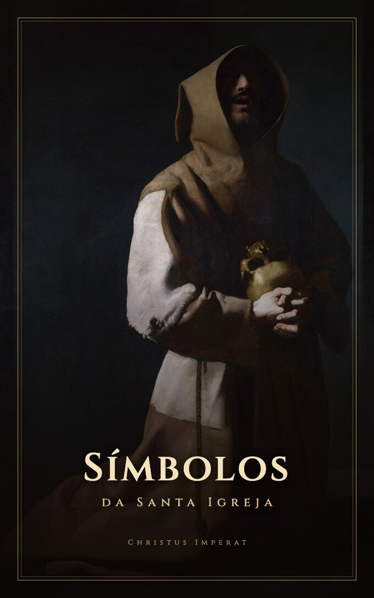
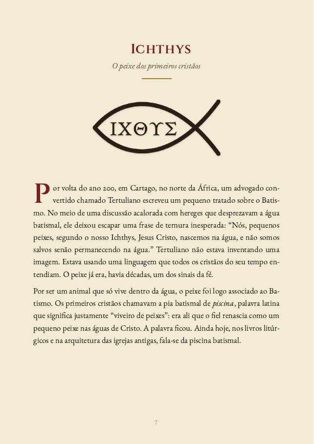
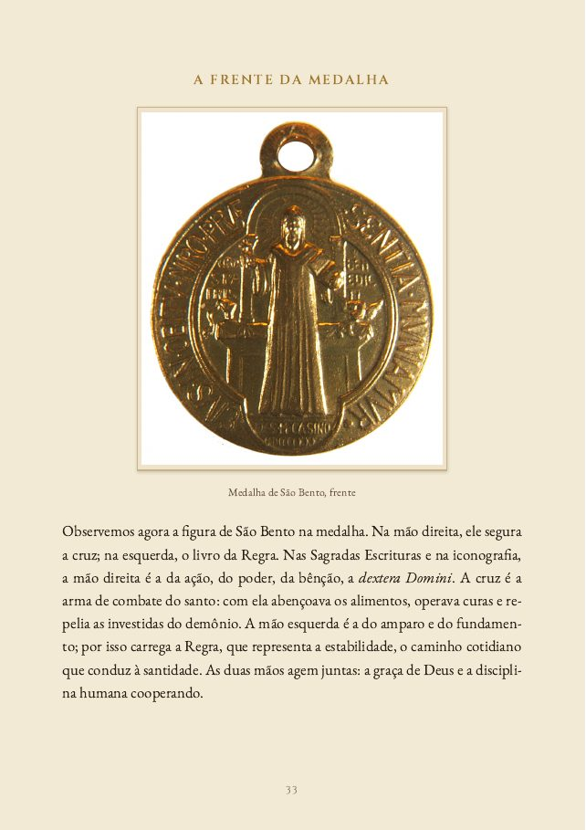
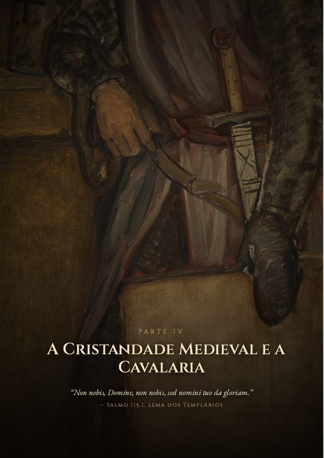
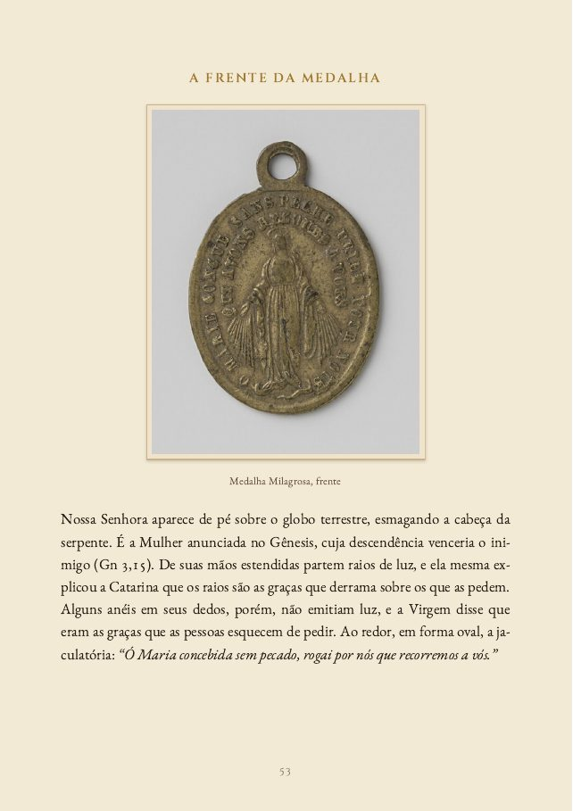
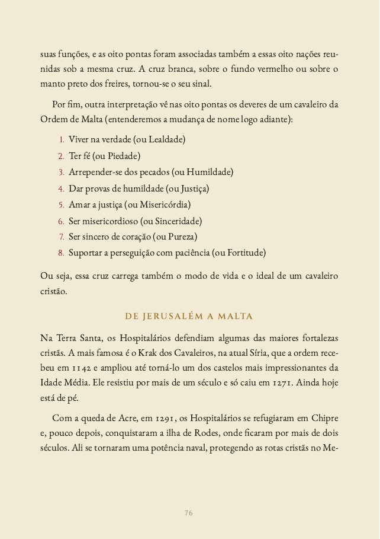
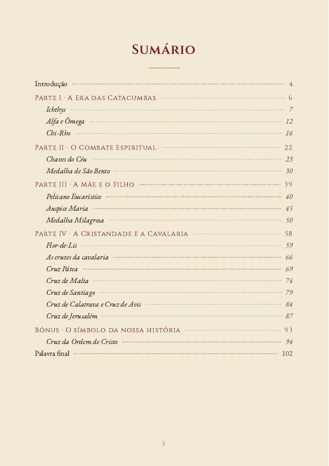
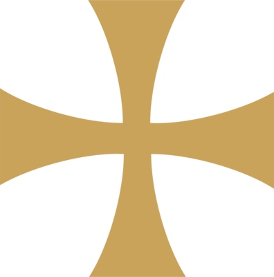

CHRISTUS IMPERAT
A história e o significado de 16 símbolos católicos, do peixe desenhado nas catacumbas às cruzes que os cavaleiros levavam no peito.

Por que este livro
Eles estão no sacrário da sua paróquia, na medalha que a sua avó deu, no adesivo do carro, no vitral, na casula do padre, na bandeira de um clube de futebol. A gente se acostuma a vê-los e quase nunca para para perguntar de onde vieram.
Mas cada um deles foi feito para dizer alguma coisa. O peixe era uma profissão de fé escondida, numa época em que ser cristão podia custar a vida. As letras da Medalha de São Bento formam uma oração inteira contra o mal. O pelicano ferido no alto do retábulo fala da Eucaristia. E as cruzes dos cavaleiros carregam a história de homens que deixaram tudo para servir.
Este e-book explica esses símbolos com calma: a história de cada um, o que a Escritura e a tradição da Igreja dizem sobre eles, e o que eles têm a ver com a vida de um católico hoje.
O que tem dentro
PARTE I
PARTE II
PARTE III
PARTE IV
BÔNUS
Por dentro






Mais de 20 obras de arte sacra, de Rubens a Caravaggio, ao longo do livro.
Talvez você esteja pensando
Não precisa ler de uma vez. Cada símbolo é um capítulo independente, que se lê em dez ou quinze minutos. Dá para começar pelo seu preferido e seguir na ordem que quiser.
Provavelmente você conhece o básico. O livro vai além: o epitáfio de Abércio, um bispo do século II que falou do peixe em versos enigmáticos; o que significa cada letra do verso da Medalha de São Bento; por que as pontas da Cruz de Malta são oito; e como uma cruz florida, nascida numa fortaleza espanhola, acabou ligada à dinastia que chegou ao Brasil.
O texto se apoia na Sagrada Escritura, nos Padres da Igreja, nos hinos da liturgia e nos documentos históricos. Datas e fatos foram conferidos. Quando uma explicação é tradição piedosa e não fato comprovado, o livro diz isso claramente.
É um PDF, mas montado como livro: 106 páginas, com tipografia clássica, pinturas em boa resolução e um desenho de cada símbolo. Abre no celular, no tablet e no computador, e pode ser impresso.
Você tem 7 dias de garantia. Se achar que não valeu, é só pedir o reembolso pela própria plataforma e recebe o valor integral, sem precisar explicar o motivo.
Para quem é

Símbolos da Santa Igreja
pagamento único, no Pix ou no cartão
Você recebe o acesso por e-mail logo após o pagamento.
Leia com calma. Se em 7 dias achar que o livro não valeu, peça o reembolso pela plataforma e devolvemos o valor integral.
Dúvidas
Assim que o pagamento é confirmado, você recebe um e-mail com o acesso à área de membros, onde o PDF fica disponível para baixar. No Pix e no cartão, isso costuma levar poucos minutos.
Sim. O PDF abre em qualquer celular, tablet ou computador. Se preferir papel, você pode imprimir.
Pode. Basta comprar e encaminhar o arquivo para a pessoa. É um bom presente de Crisma, de Primeira Comunhão ou para padrinhos.
Sim. O livro não pressupõe conhecimento prévio: cada termo é explicado quando aparece. E quem já conhece a fé há muitos anos também vai encontrar coisas novas.
Confira a caixa de spam e a aba Promoções do e-mail. Se não encontrar, fale com a gente pelo direct do Instagram @christusimperat_.
R$ 10 · acesso imediato · 7 dias de garantia